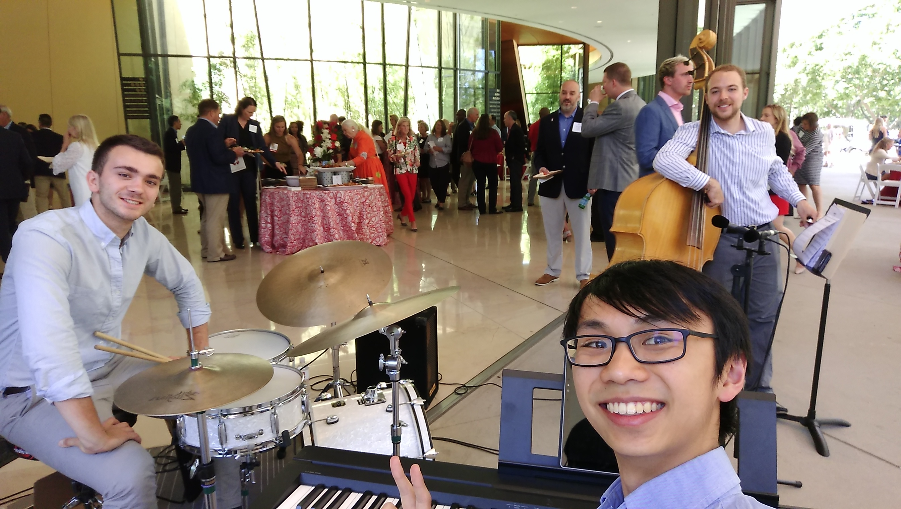

About us

We are Casual Business, a versatile jazz trio in the Stanford area that brings the joy of live music to our community! Our repertoire ranges from old-school swing, to classic jazz, to our own originals. Our playing is flexible and well-suited for the mood of any gathering, from Christmas parties to upscale receptions and more.We have played for the Stanford Atheltics Board, the Stanford Dept. of Chemical and Systems Biology, Stanford Alumni Reunions, and more.
Our rates are $300 per hour -- a student-group rate for a professional-group quality. For performance requests, please contact at
jeffjar (snail) stanford.edu .